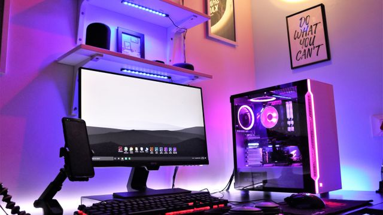

9:41
268关注
12.6万粉丝
86.4万获赞
我的投稿
投稿管理 421.3万
21:35
421.3万
21:35
前端工程师的一天：从零到上线
421.3万3.1万
 236.4万
18:24
236.4万
18:24
JS 闭包到底是个什么鬼？五分钟讲明白
236.4万1.6万

158.7万 14:08桌面改造：RGB 灯效与理线的极致
158.7万6.4万
73.2万
09:41
装机全过程：预算 8000 怎么配
73.2万2.9万
45.9万
11:16
显卡体质测试：这波能不能稳 60 帧
45.9万1.8万


账号与安全
消息通知
仅 Wi-Fi 下载高清
青少年模式
夜间模式
帮助与反馈
已经到底啦
哔哩云 v1.0.0 · 原型演示